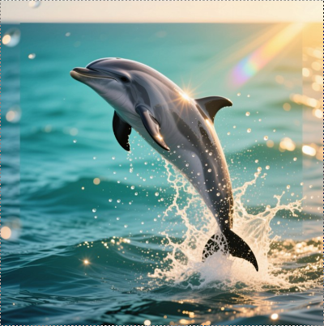

Comment nager intelligemment dans l'océan professionnel

Vous êtes là, fixant votre écran, l'esprit embrumé alors que l'horloge affiche 15h17.
La réunion critique approche et votre cerveau semble avoir pris congé sans préavis.
Et si la solution à ce problème quotidien se trouvait dans les profondeurs marines ?
Depuis des millions d'années, les dauphins ont développé des stratégies remarquables pour gérer leur énergie dans un environnement exigeant.
Ces mammifères marins, dotés d'une intelligence exceptionnelle, ont résolu des défis similaires aux nôtres : maintenir une vigilance constante, naviguer dans des environnements complexes et collaborer efficacement avec leurs congénères.
Contrairement à nous, ils ne connaissent pas le "mur de 15h" ni l'épuisement chronique. Leur secret ? Une gestion énergétique sophistiquée.
Les dauphins, ces maîtres de l'efficacité énergétique, ne luttent jamais contre les courants.
Au contraire, ils les identifient et les utilisent stratégiquement pour parcourir de vastes distances sans s'épuiser.
Cette intelligence adaptative leur permet de conserver jusqu'à 80% de leur énergie lors de longues migrations.
Dans l'océan professionnel moderne, nous sommes constamment tentés de nager à contre-courant, ignorant nos rythmes naturels au profit d'un modèle de productivité linéaire.
1. Cartographiez vos marées mentales 📊
Pendant 5 jours, notez votre niveau d'énergie et de concentration chaque heure (simple échelle de 1-10).
Identifiez vos pics naturels et vos creux récurrents. Cette pratique, similaire à l'écholocation des dauphins, vous permettra de visualiser clairement vos cycles énergétiques personnels.
2. Programmez avec intention 🗓️
Réservez vos tâches exigeant une réflexion profonde pour vos périodes de haute énergie.
Planifiez les tâches administratives et routinières pendant vos creux. Cette synchronisation biologique peut augmenter votre productivité de 35% selon les recherches en chronobiologie.
3. Respectez vos rythmes 🔄
Cessez de forcer la concentration quand votre cerveau signale un reflux.
Surfez sur vos vagues d'énergie au lieu de vous épuiser à ramer contre elles.
Saviez-vous que les dauphins ne dorment jamais complètement ?
Ils alternent le repos entre leurs deux hémisphères cérébraux, restant toujours partiellement éveillés.
Cette adaptation fascinante leur permet de maintenir une vigilance constante sans épuiser leurs ressources cognitives.
1. Segmentez votre journée en blocs de 40 minutes
Cette durée correspond approximativement à notre cycle d'attention optimal.
2. Alternez consciemment entre tâches analytiques et créatives
Cette alternance stimule différentes régions cérébrales et permet aux zones non sollicitées de récupérer.
3. Permettez à chaque "mode cérébral" de récupérer
Cette récupération active est fondamentalement différente d'une pause classique.
Les dauphins émergent régulièrement de l'eau pour obtenir une vision plus large de leur environnement.
Ces sauts stratégiques leur permettent d'observer les courants et d'anticiper les dangers.
Premier saut (mi-matinée) 🌅 :
3 minutes pour noter ce que vous avez accompli, pourquoi cela compte, et vos trois prochaines actions stratégiques.
Second saut (milieu d'après-midi) 🌇 :
Répétez l'exercice, en réajustant votre trajectoire si nécessaire.
Ces trois approches s'appuient sur des principes neurobiologiques solides.
Le Dr. Andrew Huberman a démontré que notre cerveau fonctionne naturellement en cycles d'attention et de récupération d'environ 90 minutes, appelés cycles ultradiens.
La cartographie de nos "marées mentales" s'aligne parfaitement avec les recherches sur les rythmes circadiens.
Pour les environnements de bureau traditionnels :
・Bloquez des plages horaires spécifiques dans votre calendrier pour vos pics d'énergie
・Utilisez des sons ou de la musique pour soutenir vos cycles de concentration
・Créez un signal visuel discret pour indiquer vos périodes de concentration profonde
Pour les télétravailleurs :
・Structurez votre environnement domestique avec des zones dédiées
・Utilisez la technique Pomodoro modifiée (40 minutes de travail / 5 minutes de pause)
・Programmez vos "sauts contextuels" comme des rendez-vous formels
Pour les métiers sur le terrain :
・Utilisez les transitions entre clients comme opportunités naturelles
・Enregistrez vocalement vos réflexions pendant vos déplacements
・Adaptez la durée de vos cycles en fonction des contraintes
Nous passons notre vie professionnelle à nager dans un océan d'attentes, souvent à contre-courant jusqu'à l'épuisement.
La véritable performance ne consiste pas à nager plus vite ou plus fort - mais plus intelligemment.
La sagesse des dauphins nous rappelle que la performance durable vient de l'intelligence adaptative.